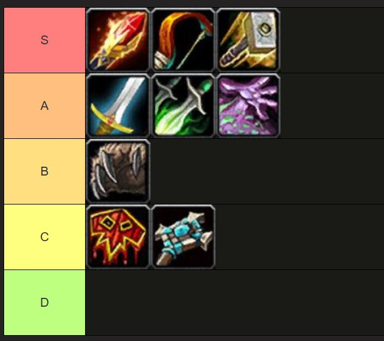

News › Tier lists d'après la sortie
Tier lists niveau 60 : le classement d'après la sortie
23 novembre 2026
Nos tier lists dataient de la bêta, quand personne n'avait encore atteint le niveau 60. Elles sont refaites avec les classements d'après la sortie, et le paysage a bien changé.

Dégâts : les surprises
- En tête (S) : chasseur Survie, démoniste Démonologie et Destruction, paladin Vindicte et guerrier Fureur.
- Le démoniste Démonologie et le paladin Vindicte passent du bas du classement de la bêta à la tête.
- Le mage Arcanes et le démoniste Affliction, premiers en bêta, descendent en A.
- Le chaman Amélioration reste en A malgré sa baisse du 17 novembre, tandis que l'Élémentaire ferme la marche (C).
Tanks et soigneurs
- Tank : le druide ours passe devant (S), suivi du guerrier et du paladin Protection (A).
- Soins : le chaman Restauration prend la tête (S), devant le druide Restauration et le prêtre Sacré (A). Le prêtre Discipline descend en B et le paladin Sacré en C.
Les builds
Les 27 builds de nos guides de spé ont été vérifiés sur le patch 1.60.1.71037 : aucun talent n'a changé de place ou disparu, tous restent valables.
Le classement JcJ date encore de la bêta : il sera refait quand le JcJ classé aura démarré. Et rappel : les raids ouvrent le 9 décembre, tout peut encore bouger. Voir la page des tier lists.
Source : tier lists de Wowhead du 19 novembre 2026, relayées par JudgeHype.